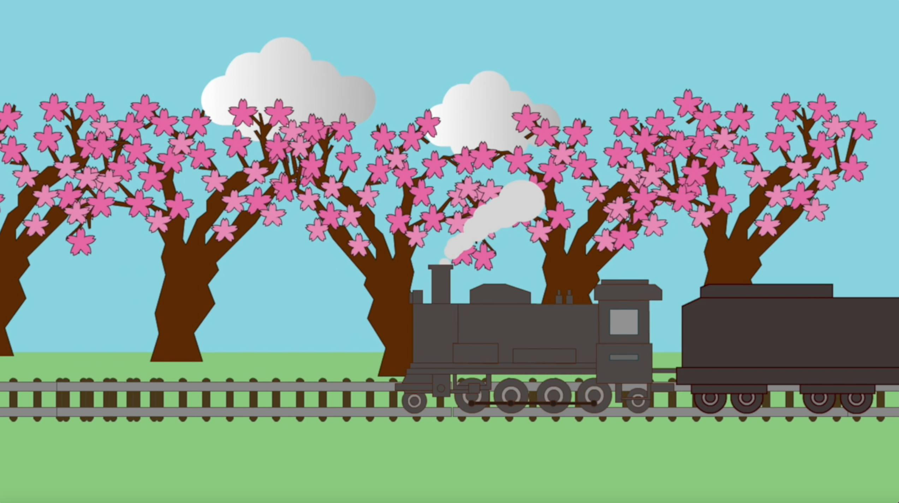
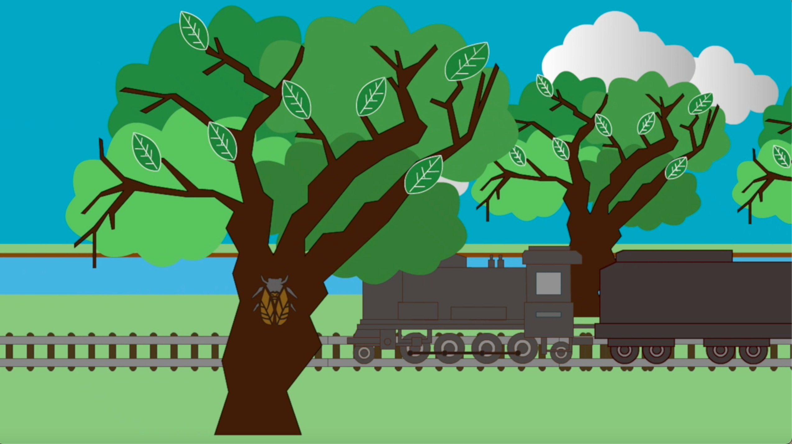
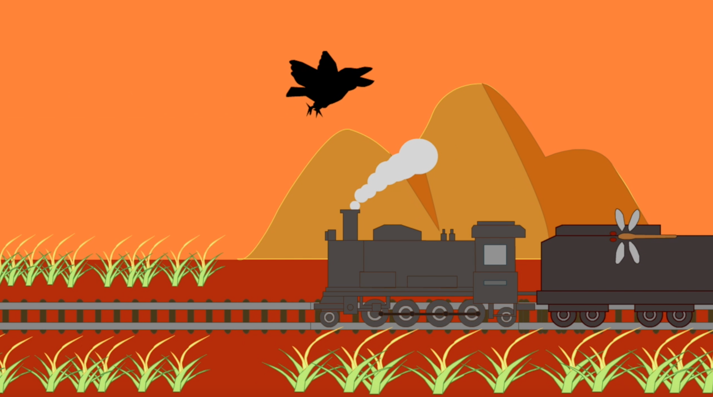
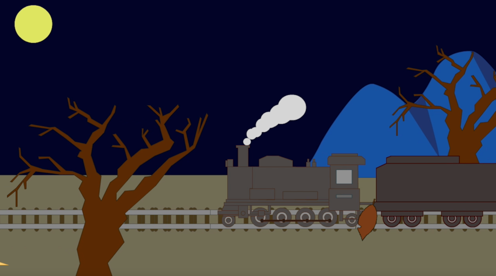

春をイメージしている場面
空は明るく周りに桜の木が立っている
BGMも明るくのんびりとしたものを選曲した

夏をイメージしている場面
空は春の場面よりも少し濃い青色で表現し、緑の葉をつけた木々と横を走る川で夏を表現した
また、かぶと虫や蝉を入れることで、夏らしさを表現した

秋をイメージしている場面
空は夕暮れにし、周りは芒や紅葉した木を立てることで秋らしさを表現した
カラスやトンボを入れ、後ろの山も紅葉によって茶色く見えているようにした

冬をイメージしている場面
木に葉をつけないことで冬を表現している
また、夜にしてBGMも静かなものにすることで冬の寒さを表現した